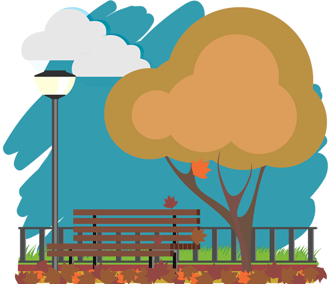

To Autum
John Keats
Season of mists and mellow fruitfulness, Close bosom-friend of the maturing sun; Conspiring with him how to load and bless With fruit the vines that round the thatch-eves run; To bend with apples the moss'd cottage-trees, And fill all fruit with ripeness to the core; To swell the gourd, and plump the hazel shells With a sweet kernel; to set budding more, And still more, later flowers for the bees, Until they think warm days will never cease, For Summer has o'er-brimm'd their clammy cells... Where are the songs of Spring? Ay, where are they? Think not of them, thou hast thy music too,— While barred clouds bloom the soft-dying day, And touch the stubble-plains with rosy hue; Then in a wailful choir the small gnats mourn Among the river sallows, borne aloft Or sinking as the light wind lives or dies; And full-grown lambs loud bleat from hilly bourn; Hedge-crickets sing; and now with treble soft The red-breast whistles from a garden-croft; And gathering swallows twitter in the skies.
September Midnight
Sara Teasdale
Lyric night of the lingering Indian summer, Shadowy fields that are scentless but full of singing, Never a bird, but the passionless chant of insects, Ceaseless, insistent. The grasshopper’s horn, and far-off, high in the maples, The wheel of a locust leisurely grinding the silence Under a moon waning and worn, broken, Tired with summer. Let me remember you, voices of little insects, Weeds in the moonlight, fields that are tangled with asters, Let me remember, soon will the winter be on us, Snow-hushed and heavy. Over my soul murmur your mute benediction, While I gaze, O fields that rest after harvest, As those who part look long in the eyes they lean to, Lest they forget them.